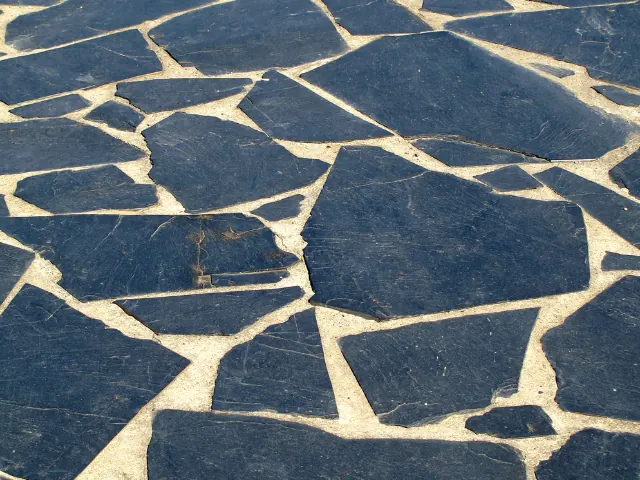
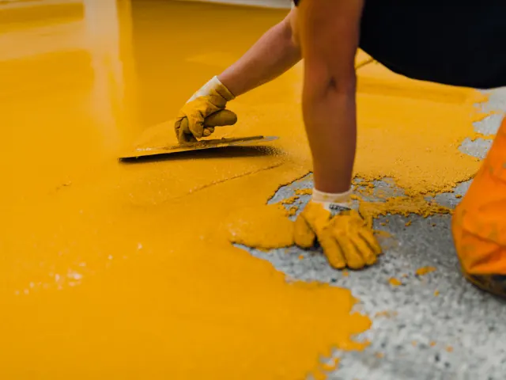

Maak je huis in Nijmegen mooier met een lavasteen gietvloer
Gepubliceerd op 17 juni 2025

Ben je op zoek naar een manier om jouw woning in Nijmegen een unieke en stijlvolle uitstraling te geven? Dan is een lavasteen gietvloer een uitstekende keuze. Deze moderne vloeroplossing combineert natuurlijke schoonheid met strakke elegantie en past perfect in uiteenlopende interieurs, van industrieel tot Scandinavisch. In dit artikel lees je waarom een lavasteen gietvloer zo bijzonder is en hoe je deze het beste integreert in jouw interieur.

Wat is een lavasteen gietvloer?
Een lavasteen gietvloer is een naadloze vloer die de robuuste uitstraling van natuursteen combineert met het comfort en de moderne techniek van een gietvloer. De vloer wordt samengesteld op basis van natuurlijke vulkanische mineralen, pigmenten en hoogwaardige kunstharsen. Het resultaat? Een vloer met een warme, aardse uitstraling, die doet denken aan het ruwe karakter van echte lavastenen, maar dan met een strak en egaal oppervlak.
Waarom kiezen voor een lavasteen gietvloer?
- Unieke uitstraling: Geen enkele lavasteen gietvloer is hetzelfde. Door de natuurlijke mineralen en de wijze van afwerking ontstaat er altijd een uniek patroon en kleurenspel. Dat maakt de vloer bijzonder geschikt voor wie op zoek is naar iets exclusiefs. De subtiele kleurnuances en matte afwerking geven je interieur direct karakter.
- Perfecte balans tussen stoer en elegant: De lavasteen look heeft een stoere, bijna industriële basis, maar door de zachte glans en het gladde oppervlak oogt de vloer tegelijkertijd ook elegant. Hierdoor kun je zowel moderne als klassieke interieurs verrijken met deze vloer. Denk aan een strak appartement in het centrum van Nijmegen of juist een karakteristieke jaren ’30-woning in Nijmegen-Oost, de lavasteen gietvloer past zich moeiteloos aan.
- Onderhoudsvriendelijk en duurzaam: Een gietvloer op basis van lavasteen is bijzonder slijtvast. Vuil en stof krijgen weinig kans, omdat de vloer volledig naadloos is. Ook is de vloer geschikt voor vloerverwarming, wat hem extra comfortabel maakt. In een stad als Nijmegen, waar winters guur kunnen zijn, is dat een groot pluspunt.

Tips: zo combineer je een lavasteen gietvloer in je interieur
Een lavasteen gietvloer vormt een prachtige basis voor je inrichting, maar komt pas echt tot leven in combinatie met de juiste materialen en kleuren. Hier zijn enkele tips:
- Combineer met warme houttinten: Omdat lavasteen van nature koel oogt, werkt het goed om warme elementen toe te voegen. Denk aan eikenhouten meubels, een notenhouten eettafel of houten wandplanken. Deze combinatie creëert balans en gezelligheid in je interieur.
- Werk met natuurlijke materialen: Wol, linnen, leer en rotan doen het uitstekend op een lavasteen gietvloer. Ze versterken het natuurlijke karakter van de vloer en zorgen voor een huiselijke sfeer. Een wollen vloerkleed of linnen gordijnen verzachten de strakke lijnen van de vloer en maken het geheel warm en uitnodigend.
- Speel met contrasten: Laat de donkere grijstinten van de lavasteen gietvloer contrasteren met lichte muren of meubels. Witte, zandkleurige of pasteltonen springen er echt uit tegen deze vloer. Dit geeft je interieur een frisse en moderne uitstraling.
Vergeet verlichting niet: De textuur van de lavasteen gietvloer komt het mooist tot zijn recht met goede verlichting. Kies voor indirecte verlichting, zoals LED-strips langs de muur of spotjes in het plafond. Hiermee benadruk je de structuur en het unieke karakter van de vloer.
Aannemers en verbouw in Nijmegen
Zin om te beginnen? In onze bedrijvengids vind je alle 52 aannemers in Nijmegen, met openingstijden, kenmerken en een kaart.
Bekijk alle 52 aannemers in Nijmegen
Heb je zelf een aannemer? Laat je hier uitlichten.